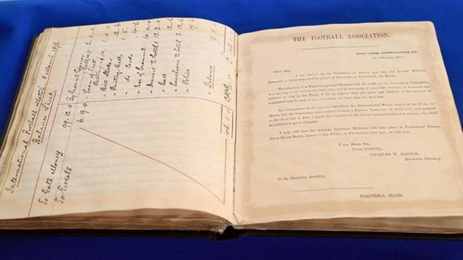
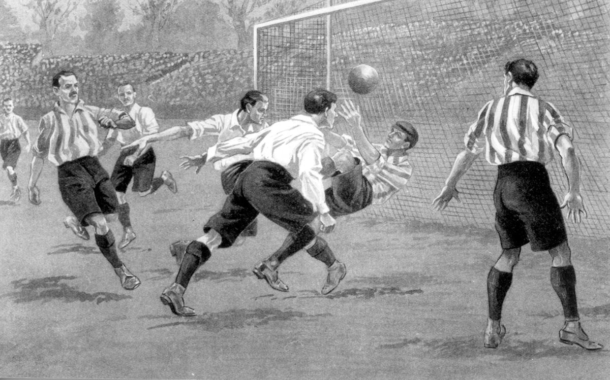

El padre del fútbol
Entre los reunidos en el Freemasons' Tavern destacaba la presencia de Ebenezer Cobb Morley. Abogado nacido en Hull en 1831, había creado años antes un club deportivo, el Barnes & Mortlake Regatta, centrado en el remo, del que nacería el Barnes Football Club, en el que jugó.
Fue el gran impulsor de la reunión que se celebró el 26 de octubre de 1863 en Londres. Lo hizo a través de las páginas del diario 'Bell's Life', animando a otros clubes a reunirse para establecer unas normas concretas en el aún incipiente fútbol, al estilo de lo que ya sucedía con el cricket, un deporte que ya contaba con un reglamento propio.
La importancia de las 'Sheffield Rules'
Los reunidos en Londres, sin embargo, no inventaron o crearon el fútbol de la nada: desde 1858 existía en el norte del país, concretamente en la ciudad de Sheffield, una especie de código que ya agrupaba algunas reglas. Pasarían a la historia como las normas de Sheffield, las 'Sheffield Rules'.
Habían quedado establecidas en 1858: nacieron específicamente para un club, el Sheffield FC -el más antiguo del mundo, aunque nunca ha llegado al fútbol profesional-, que a su vez había nacido para que los jugadores de cricket de Sheffield mantuvieran la forma durante el invierno..
Entre 1863 y 1877, coexistieron las normas establecidas en Londres y las fijadas años antes en Sheffield. En 1877, los clubes adscritos a la normativa de Sheffield votaron a favor de unificarse bajo el código de la FA.
Fue en Sheffield -justo es apuntarlo- donde es establecieron algunos puntos básicos del reglamento: el saque inicial, los saques de esquina y los tiros de falta.
De hecho, el primer partido de fútbol del que se tiene constancia se jugó en 1794 y enfrentó a dos ciudades cercanas, Sheffield y Norton (los clubes ni siquiera existían como tales).
El debate de las manos
De vuelta a los pioneros de la FA, en aquellas primeras reuniones el gran debate giraba en torno al uso de las manos: Cobb Morley fue uno de los grandes partidarios de prohibir el uso de las manos en el fútbol: sus detractores fundarían en 1871 la Rugby Union.
Ebenezer Cobb Morley, conocido en Inglaterra como 'el padre del fútbol', se encargó de redactar catorce normas básicas, que regulaban entre otros aspectos las porterías, el tamaño del terreno de juego o el saque inicial. Nacieron entonces las llamadas 'Laws of the Game', esbozo del primer reglamento.
El encuentro del 26 de octubre de 1863 en Londres fue el primero: los pioneros del fútbol mantuvieron cinco reuniones más, a lo largo de los siguientes 44 días, hasta que el 8 de diciembre de ese mismo año llevaron a la imprenta de John Lillywhite, un impresor de Seymour Street, que publicó un cuadernillo con el primer reglamento de la historia del fútbol.
En realidad fueron dos, uno de bolsillo , al precio de un chelín, y otro de tapa dura y de mayor tamaño, a un chelín y seis peniques.

Comments
De la Fuente quiere renovar "si hay convencimiento por las dos partes"
Posted by Migue Angel Towers on 23/10/2023